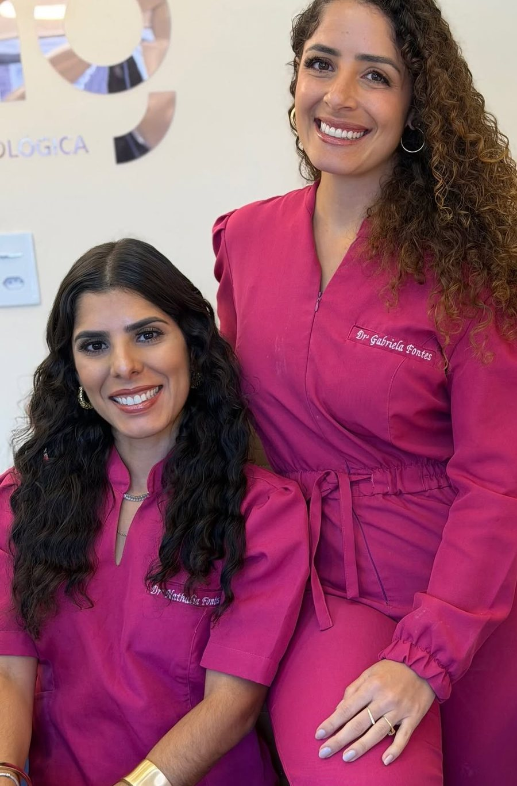
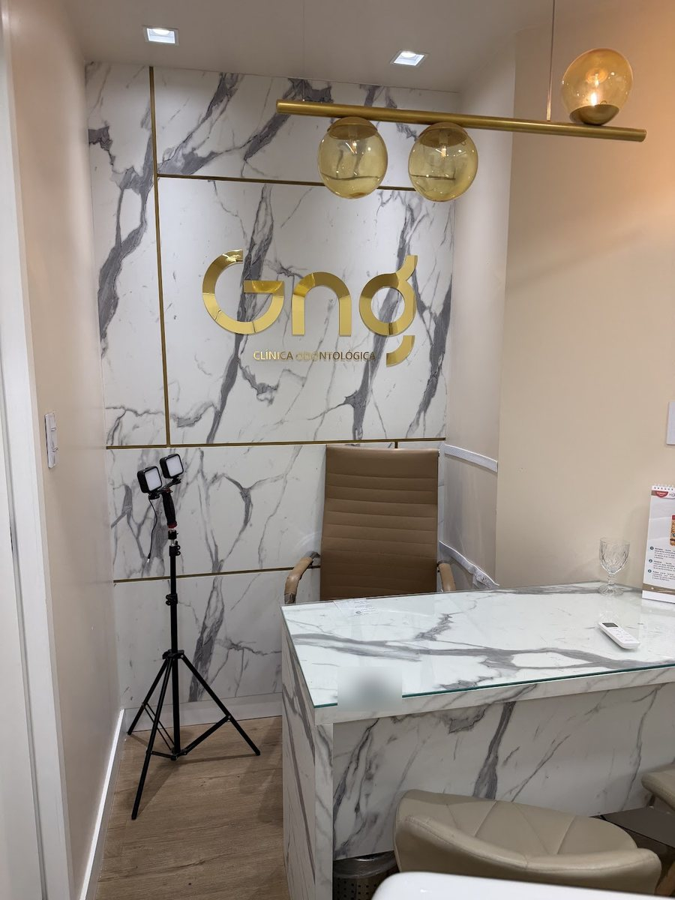
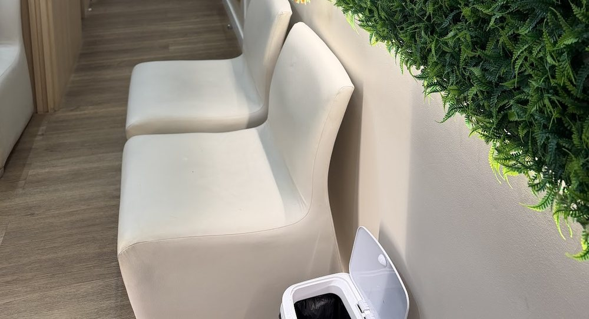
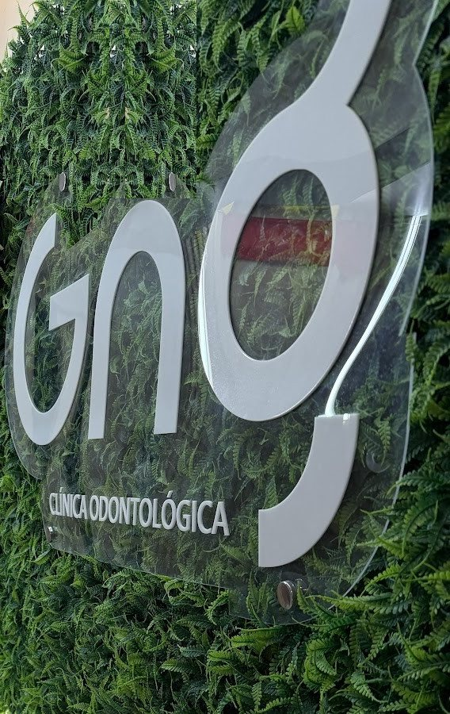
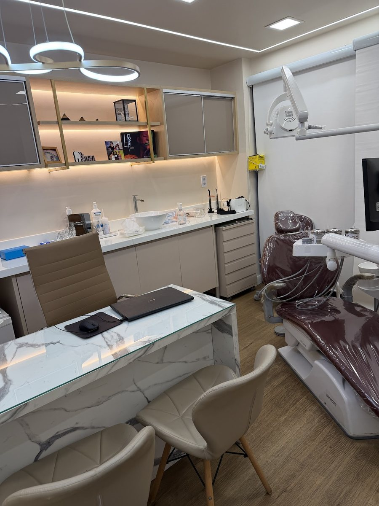
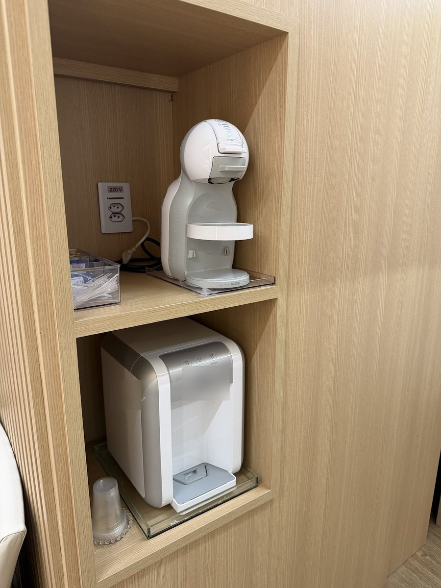

Dra. Nathalia Fontes
CRO-BA 13644Sócia desde a abertura, em 2018. Atuação em alinhadores transparentes e ortodontia.
Fonte: CRO na bio do Instagram delaClínica Odontológica · Cidadela, Salvador · desde 2018
Reabilitação oral, prótese e implantes, alinhadores transparentes, estética do sorriso e prevenção, na clínica das sócias da família GNG, no Edifício Cidadela Center III.

Dra. Nathalia e Dra. Gabriela Fontes, na recepção da GNG.
Por onde começar
Cada tratamento tem uma página para ler com calma antes da consulta. A informação é geral; a indicação é feita na avaliação.
Prótese, implantes e o caminho em etapas.
Reabilitação AlinhadoresAlinhadores transparentes e ortodontia.
Alinhadores EstéticaFacetas em resina e clareamento, com indicação.
Estética PrevençãoGengiva, fio dental e consultas de rotina.
PrevençãoPrimeira vez na GNG? Veja como é a primeira consulta e como chegar.
Reabilitar sorrisos
“Na família GNG, nosso propósito é reabilitar sorrisos com respeito, cuidado e naturalidade […]”
Legenda no Instagram @clinicagng_O que trouxe você, a saúde geral, os remédios e os tratamentos que já fez.
Dentes, gengiva, mordida e próteses antigas; exames de imagem quando indicados.
As opções explicadas com calma e a ordem do tratamento, combinada com você.
Primeiro a saúde: gengiva, cáries, canais e extrações, quando indicados.
Prótese, coroa, implante ou outra solução indicada para o seu caso.
Higiene em casa e consultas periódicas para acompanhar o que foi feito.
A família GNG
“Família GNG” é como a clínica chama a si mesma. A sociedade foi aberta em 27/08/2018, no Edifício Cidadela Center III, na Rua Senador Theotônio Vilela — o mesmo prédio onde Gislane Fontes já atendia antes da GNG, segundo listas antigas.
CNPJ aberto com a Dra. Nathalia como sócia-administradora e a Dra. Gabriela como sócia.
Gislane Fontes do Nascimento entra na sociedade.
Nota 5,0 em 25 avaliações, que falam de acolhimento e atenção.

Sócia desde a abertura, em 2018. Atuação em alinhadores transparentes e ortodontia.
Fonte: CRO na bio do Instagram delaSócia desde 2018. O perfil dela na Doctoralia lista prótese dentária, reabilitação oral, prevenção de cáries e clareamento dental.
Fonte: DoctoraliaSócia desde 2020. Especialidades registradas no CRO-BA: Implantodontia e Prótese Dentária.
Fonte: painel do CRO-BAA clínica
A parede viva, a espera clara, o cantinho do café e o consultório. Fotos publicadas pela clínica no Google.





Mais fotos, com o lavabo, em a clínica e a família GNG.
Na voz da GNG
Trechos de legendas publicadas no Instagram da clínica, palavra por palavra. Ver o perfil @clinicagng_
“O sorriso faz parte da nossa identidade. Com o tempo, muitas coisas mudam, mas a alegria de sorrir nunca deveria ser perdida.”
“Cada sorriso merece ser cuidado com atenção aos detalhes. […] Porque cuidar de você vai muito além do procedimento.”
“Sangramento gengival não é normal e, na maioria das vezes, não é causado pela faceta. O principal motivo costuma ser o acúmulo de placa bacteriana devido ao uso inadequado ou à ausência do fio dental.”
“A manutenção dos alinhadores é muito mais do que uma simples troca de placas. É nesse momento que avaliamos a evolução do tratamento, fazemos os ajustes necessários […]”
Entre uma consulta e outra
“O uso diário do fio dental e as consultas periódicas são essenciais…” — @clinicagng_. Informação geral; as orientações do seu caso são as que a dentista passar.
A legenda da clínica lembra que o uso diário do fio dental é parte do cuidado com a gengiva.
Escovação cuidadosa, inclusive na linha da gengiva e ao redor de facetas, próteses e alinhadores.
“Sangramento gengival não é normal”: é motivo para conversar com a dentista.
O intervalo entre uma consulta e outra é definido para cada pessoa, na avaliação.
Avaliações
Trechos curtos de avaliações públicas da ficha da clínica, sobre o atendimento. Nomes abreviados.
Excelente atendimento! Fui muito bem acolhida e tratada com muita humanização, carinho e respeito. Toda a equipe demonstra atenção e cuidado com cada pessoa.
Fui recebida com muito respeito, carinho e profissionalismo desde o primeiro momento. […] tornando o ambiente acolhedor e humanizado.
Uma clínica com profissionais de excelência, muito atenciosas. Fiz tratamento com Dra Gabriela e recomendo muito
Atendimento de excelência do início ao fim. Profissionais extremamente atenciosas e qualificadas…
Fui muito bem acolhida. […]
Ótimo atendimento, desde da recepção a chegada a dentista.
Equipe técnica, atendimento humanizado e orientações claras.
Endereço e horário
Rua Senador Theotônio Vilela, 225, em Brotas. Veja a primeira consulta e como chegar.
Clínica Odontológica GNGRua Senador Theotônio Vilela, 225 · Edifício Cidadela Center III · Brotas, Salvador – BA · 40279-435
Atendimento com hora marcada
Horário da ficha da clínica no Google. Atendimento com hora marcada — confirme com a recepção pelo WhatsApp.
Dúvidas frequentes
No Edifício Cidadela Center III, Rua Senador Theotônio Vilela, 225, em Brotas, Salvador (CEP 40279-435). Veja como chegar e o mapa.
Segunda a sexta, das 8h às 17h, segundo a ficha da clínica no Google. Sábado e domingo, fechado. Atendimento com hora marcada.
Pelo WhatsApp da recepção, (71) 99311-9319. A recepção combina dia e horário.
A clínica tem três sócias: Dra. Nathalia Fontes (CRO-BA 13644), Dra. Gabriela Fontes (CRO-BA 15130) e Gislane Fontes do Nascimento, com Implantodontia e Prótese Dentária registradas no CRO-BA. Veja a família GNG.
Sim, é uma das áreas de atuação da Dra. Nathalia. Se o alinhador é indicado para você, isso se decide na avaliação. Veja alinhadores e ortodontia.
Pela avaliação: ela mostra o que precisa ser cuidado antes e quais opções fazem sentido no seu caso. Veja reabilitação oral.
O perfil da clínica na Doctoralia cita Amil, Bradesco Saúde e Unimed. Confirme com a recepção antes da consulta.
Agende
Edifício Cidadela Center III, Rua Senador Theotônio Vilela, 225. Segunda a sexta, das 8h às 17h. A recepção combina dia e horário pelo WhatsApp (71) 99311-9319.
Prévia feita pelo Doutor Sob Medida
Textos, fotos, cores e páginas: eu ajusto pelo WhatsApp até ficar do seu jeito.
Sem mensalidade. Domínio .com.br no seu nome, com o 1º ano incluído, e hospedagem.
No seu endereço, por exemplo gngodontologia.com.br. A disponibilidade eu confiro com você.
JMJoão Mateus · Doutor Sob Medida · ver as condições